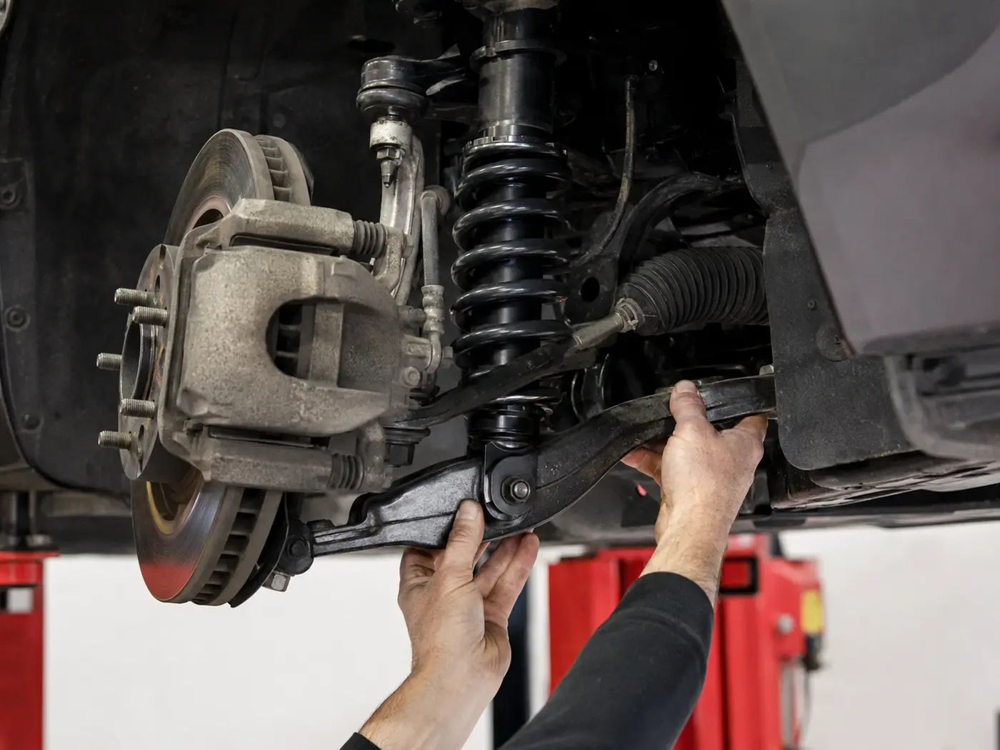
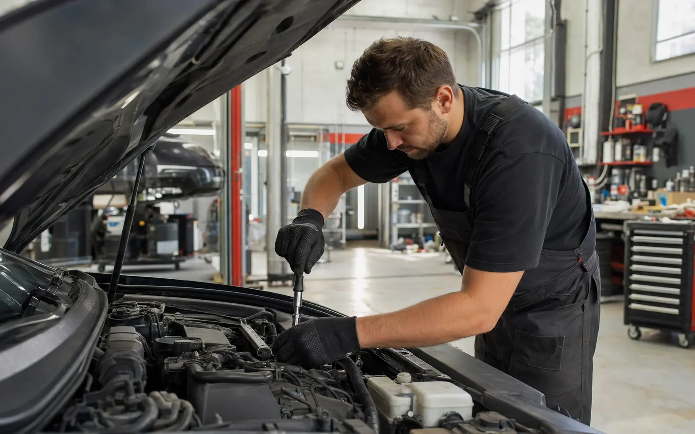
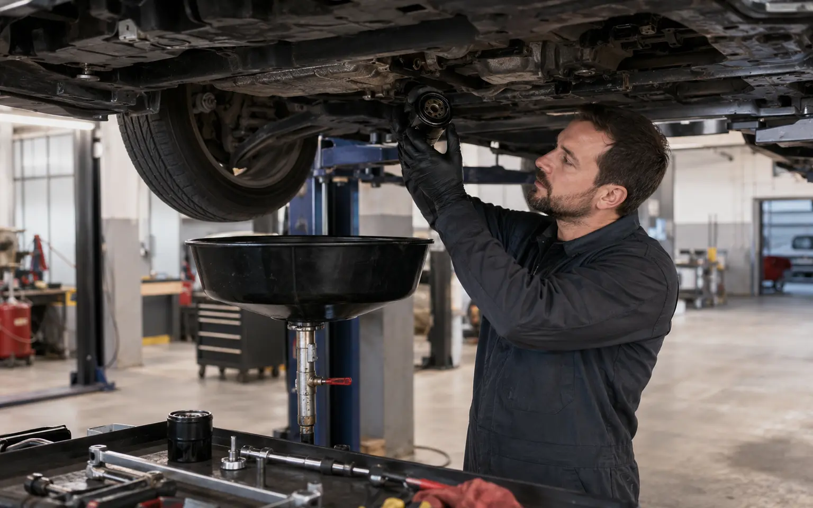
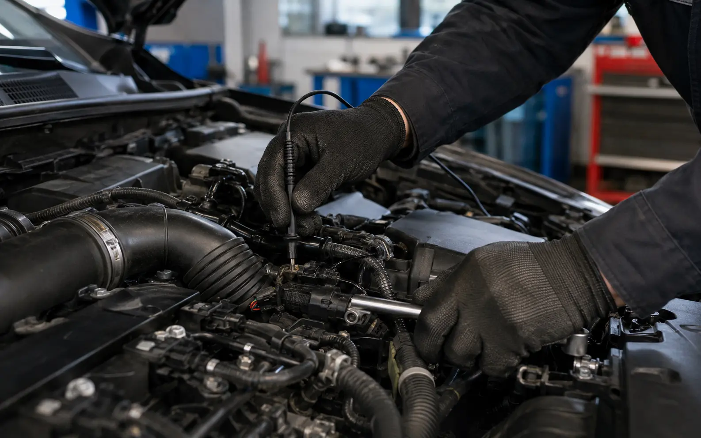
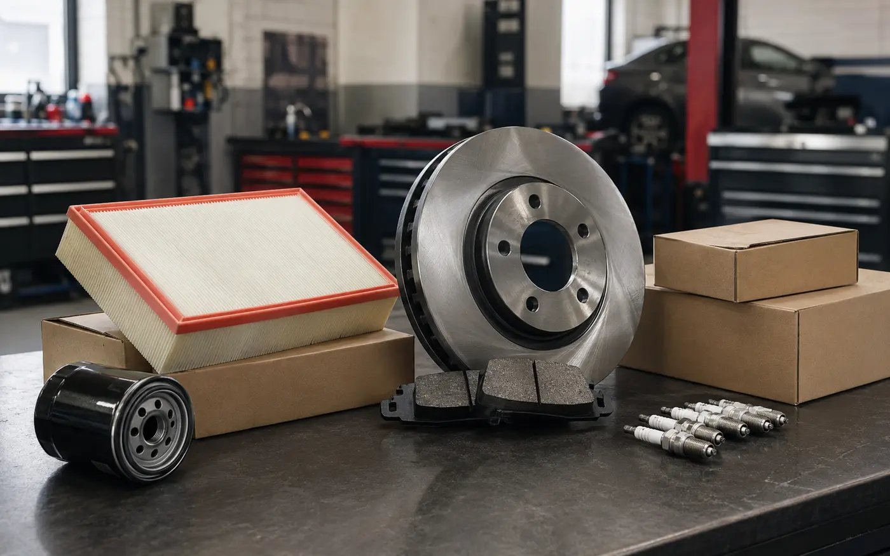
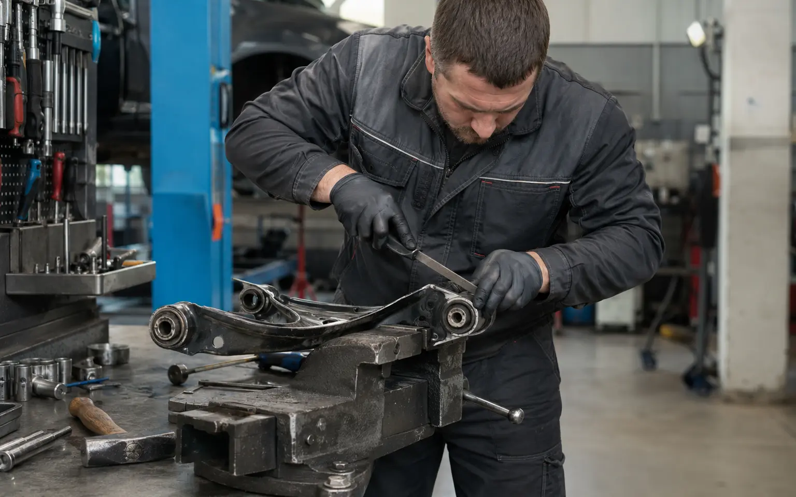
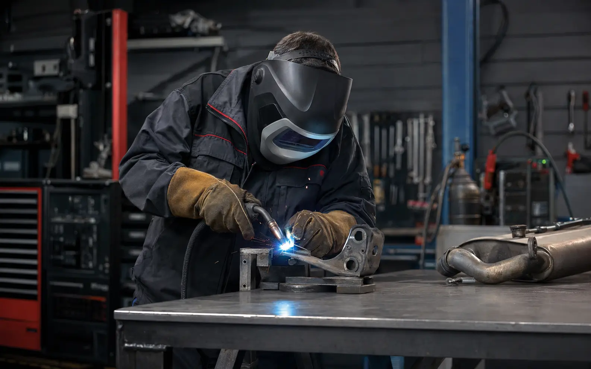

Ходовая часть
Диагностика и ремонт подвески, рулевого управления, ступиц и тормозной системы.
Автосервис в Ижевске · Весенний проезд, 5
От замены масла до сложного ремонта ДВС. Ходовая часть, ТО, расходники, замена ГРМ и ремонт двигателя.

Основные работы
Сначала находим неисправность, затем называем перечень работ и согласуем ремонт.

Диагностика и ремонт подвески, рулевого управления, ступиц и тормозной системы.

Замена масла, фильтров и технических жидкостей. Подбор и установка запчастей.

Замена ремня или комплекта ГРМ с предварительной проверкой состояния узлов.
Диагностика, эндоскопия и ремонт ДВС — от поиска причины до сложных работ.

Запчасти и расходники
Популярные расходники держим в наличии. Остальные позиции заказываем после согласования производителя и стоимости.
Мастера и подход
Более 15 лет работаем с автомобилями: от плановой замены масла до сложного ремонта двигателя. Сначала проверяем причину, затем согласуем работы и запчасти.
Вы знаете, за что платите и что будет сделано.
Знаем типовые неисправности и берёмся за сложные задачи.


Порядок работы
На каждом этапе вы понимаете, что происходит с автомобилем и что будет дальше.
Уточняем симптомы и выбираем удобное время.
Осматриваем автомобиль и находим причину.
Обсуждаем работы, запчасти и стоимость.
Выполняем работы и проверяем результат.
Частые вопросы
Короткие ответы о диагностике, запчастях, стоимости и приёмке автомобиля.
Задать вопрос по телефонуУсловия зависят от вида работ. Перед визитом уточним детали и подскажем оптимальный вариант.
Время зависит от симптомов и вида диагностики. Предварительно сориентируем при записи.
После осмотра составляем перечень работ и запчастей. Начинаем ремонт только после согласования.
Да, если работа требует времени. Условия приёмки уточним при записи.
Адрес и контакты
Выберите удобное время через онлайн-запись или позвоните по номеру +7 (3412) 913-999. Работаем ежедневно с 09:00 до 19:00.